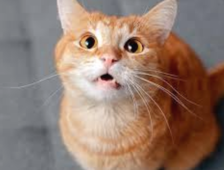
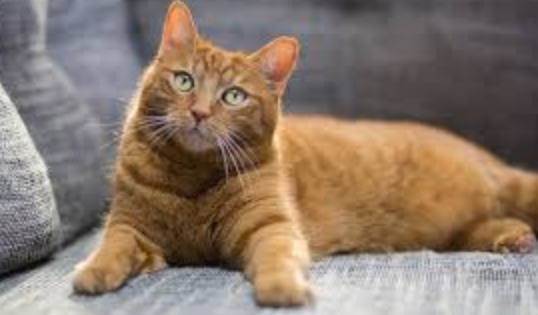
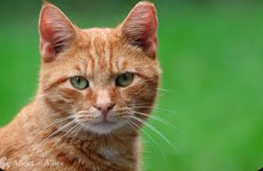

tabbytha thhe cat



Meet Tabatha
Tabatha (or “Tabs” for short) is a 3-year-old ginger cat with the cutest little face and the softest fur. She’s calm, sweet, and loves to nap in warm, sunny spots around the house.
She’s a little shy at first, but once she gets to know you, she’ll come up for head scratches and purr like crazy. Her favorite things are cozy blankets, sitting by the window, and playing with feather toys when she’s in the mood.
Tabatha isn’t super clingy, but she likes being near her people. She’d do best in a quiet home, either by herself or with a calm cat friend.
If you’re looking for a chill, gentle kitty to hang out with, Tabatha might be your perfect match